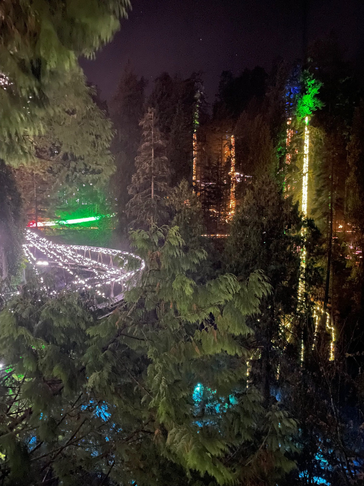
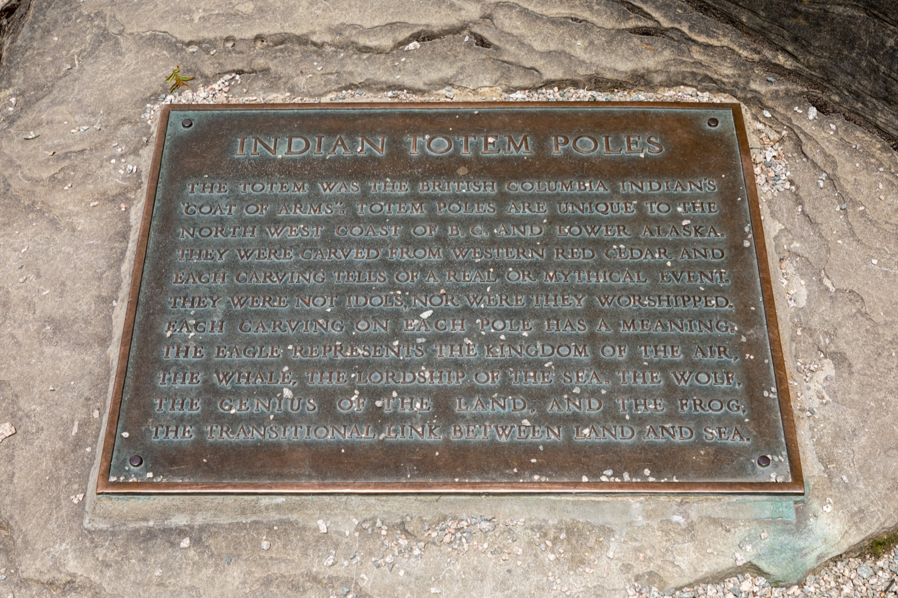
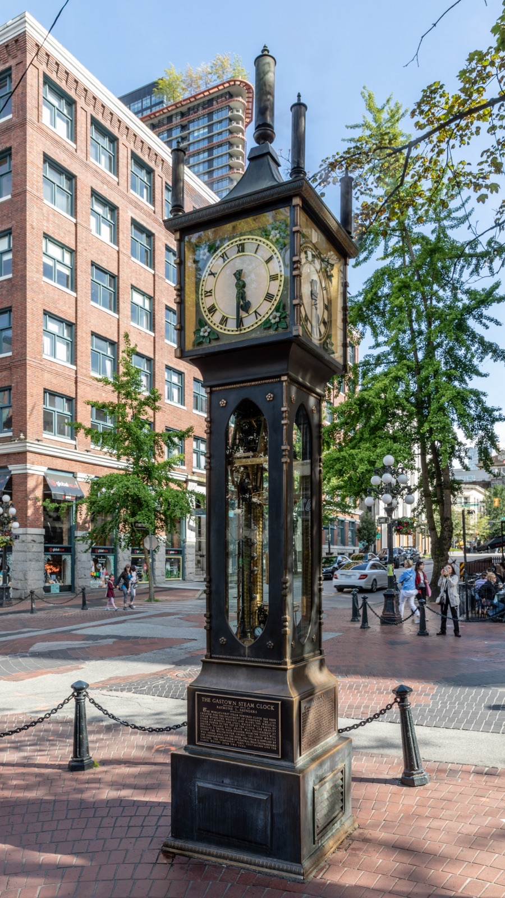
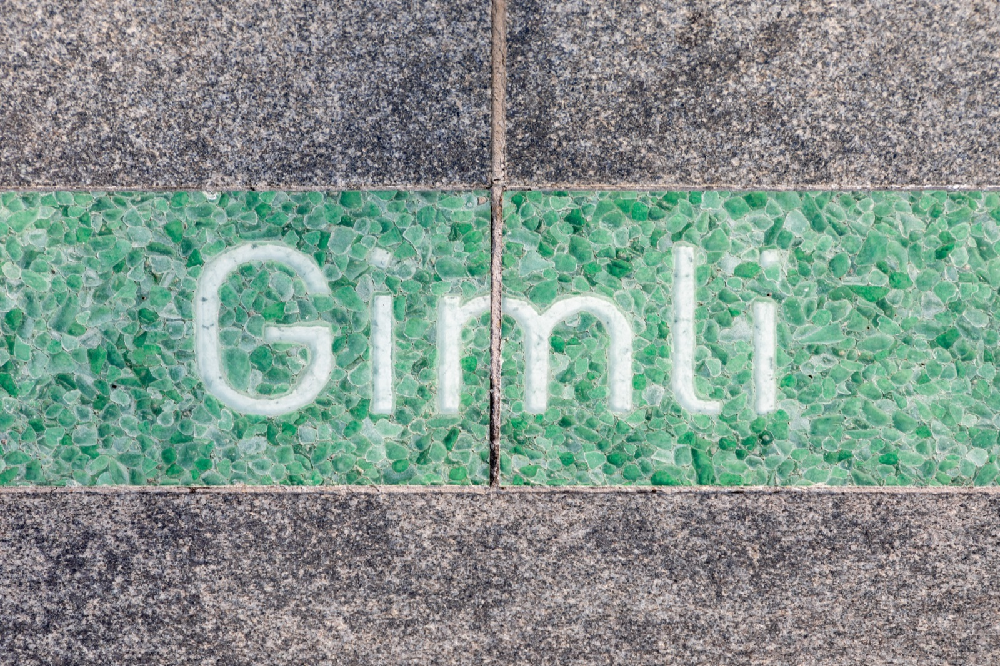
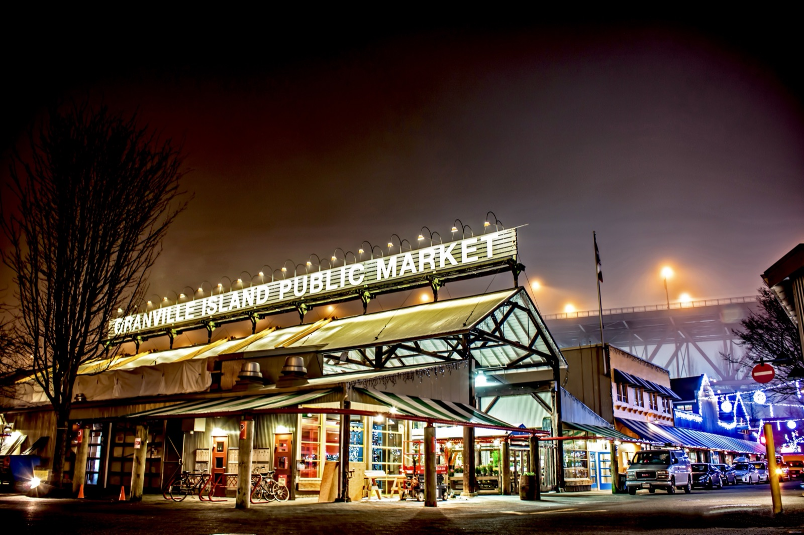
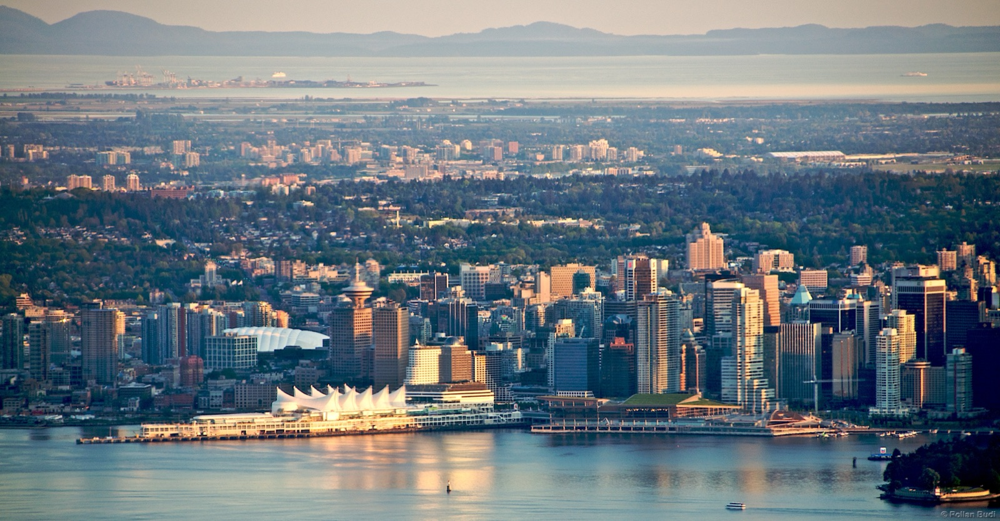

Budget-friendly hostel within 10-minute walk of Granville and Robson streets. Had GF oatmeal at breakfast but didn't chance it — avg guest age was around 20, a bit young for comfort.
Budget-Friendly Central Location 24-Hour Front Desk
Permanently closed March 2026. Was a top celiac-friendly spot with dedicated GF fryer and red toothpick system for safe meals. Parent company MeeT on Main is still operating.
Getting Around
SkyTrain
3 lines connecting downtown to surrounding areas. Canada Line to YVR airport in 26 min. Compass Card or contactless payment.
12-minute scenic ferry from downtown Waterfront to Lonsdale Quay in North Vancouver.
Waterfront → Lonsdale Quay
Bike / Walk
Vancouver is very bikeable. Stanley Park Seawall is a famous cycling route.
Mobi bike share available
Fare Tip
After 6:30 PM weekdays and all day weekends, the entire system is flat 1-zone fare — great for exploring further neighborhoods on a budget.
Landmarks & Must-See Spots
8 spots
Capilano Suspension Bridge Park
Nature
459-foot suspension bridge high above the Capilano River, plus Treetops Adventure through old-growth forest and the glass-bottomed Cliffwalk hugging a granite cliff face.
North Vancouver
Went here

Totem Poles (Stanley Park)
Historic
Nine totem poles at Brockton Point in Stanley Park, representing First Nations art from across British Columbia. One of the most visited attractions in BC.
Stanley Park, Brockton Point
Went here

Gastown Steam Clock
Historic
Iconic steam-powered clock in Vancouver’s oldest neighborhood. Whistles every 15 minutes. Gastown’s cobblestone streets and heritage buildings surround it.
Gastown, Water Street
Went here

Canada Place
Historic
Iconic waterfront landmark with its distinctive white sail-like roof. Home to the cruise ship terminal, Vancouver Convention Centre, and FlyOver Canada.
Waterfront
Went here

Granville Island Public Market
Market
Bustling public market on False Creek with fresh produce, artisan food vendors, craft galleries, and street performers. Great for GF snacks — many vendors label allergens.
Granville Island, False Creek
Went here

Kitsilano Beach
Nature
Sandy beach with mountain views across English Bay. Saltwater pool open in summer. Views of downtown skyline and North Shore mountains.
Kitsilano
Went here
Grouse Mountain
Nature
1,250-metre North Shore peak accessed by the Skyride aerial tram. Hiking, wildlife refuge with grizzly bears, and panoramic views of the city. Winter skiing available.
North Vancouver
Went here

Cleveland Dam
Nature
Dam at the south end of Capilano Lake with views of the Lions peaks. Short walk from Capilano Suspension Bridge — combine both in a North Shore day trip.
North Vancouver, Capilano River
Went here
Neighborhoods
Gastown
Historic & Trendy
Vancouver’s oldest neighborhood with cobblestone streets, heritage buildings, and the famous Steam Clock. Mix of boutique shops, galleries, and restaurants.
Yaletown
Chic & Foodie
Converted warehouse district with upscale restaurants, bars, and boutiques along the False Creek waterfront. Home to the now-closed MeeT location.
Kitsilano
Beachy & Relaxed
Laid-back neighborhood with sandy beaches, mountain views, and health-conscious dining. Great for cycling along the seawall.
Granville Island
Market & Arts
A cultural hub under the Granville Bridge with the famous Public Market, craft breweries, artisan studios, and a vibrant food scene.
North Shore
Nature & Adventure
Home to Capilano Suspension Bridge, Grouse Mountain, and Cleveland Dam. Accessible by SeaBus from downtown. The outdoor adventure base of Vancouver.
Things to Do
Tours & Experiences
Capilano Suspension Bridge Park
Paid
Admission to suspension bridge, Treetops Adventure, and Cliffwalk.
10km paved path circling Stanley Park along the waterfront. Walk or cycle past totem poles, Siwash Rock, and Lions Gate Bridge views.
2–3 hours by bike
Granville Island Market Tour
Free
Wander the Public Market stalls on your own — fresh produce, baked goods, crafts, and street performers. Many vendors label GF items.
1–2 hours
Frequently Asked Questions
Vancouver scores 8/10 for GF friendliness (GF Friendly). The city has multiple dedicated gluten-free bakeries and restaurants, excellent staff awareness, and abundant GF dining options citywide. English is widely spoken, making communication about celiac needs straightforward.
Fritz European Fry House (2/5 GF score, European Fries) has a fries-only fryer. Vancouver also has dedicated GF spots like The Gluten Free Epicurean and Lemonade Gluten Free Bakery for safe dining.
Yes. Whole Foods Market has multiple locations with wide GF sections. Choices Markets is a BC-based chain with 9 stores carrying extensive GF products. The Gluten Free Epicurean and Lemonade Gluten Free Bakery are dedicated GF specialty shops.
Travel Tips
The Canada Line SkyTrain from YVR to downtown takes 26 minutes and costs $4.55 + $5 YVR AddFare — much cheaper than a $38+ taxi.
Compass Card accepts contactless payments (Apple Pay, Visa, etc.) — no need to buy a physical card if you’re staying short.
Combine Capilano Suspension Bridge, Cleveland Dam, and Grouse Mountain into one North Shore day trip — they’re all close together.
November is the wettest month — plan indoor activities (FlyOver Canada, Granville Island Market) as rain backups.
Vancouver’s Asian food scene is incredible but always ask about soy sauce — traditional soy sauce contains wheat.
What I'd Do Differently
Would have stayed entirely at the Hilton rather than splitting a night at the hostel — the Samesun was fine but skewed very young.
Should have booked whale watching further in advance — November is late in the season and tours fill up.
Been to Vancouver recently?
I'd love to hear your GF restaurant tips and hidden gems.